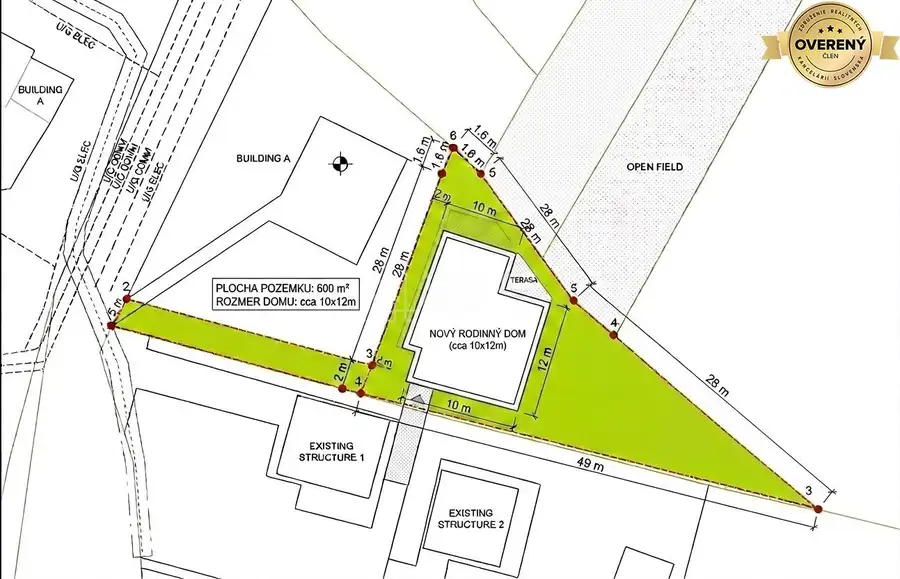
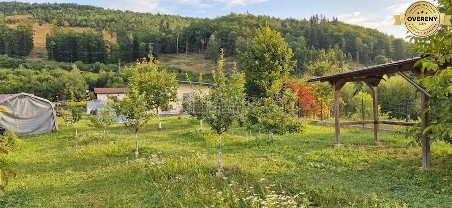
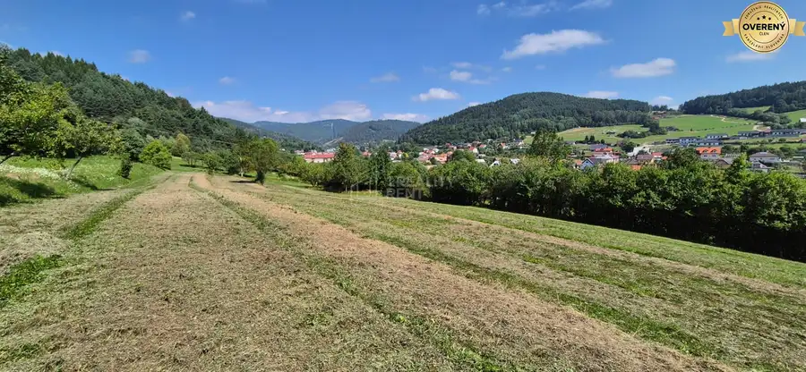
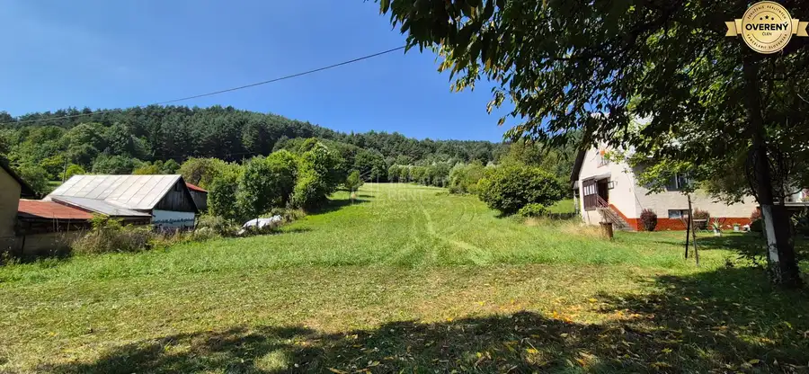
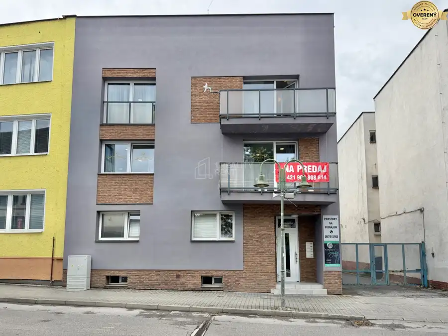

Predaj: Stavebný pozemok 680m2 v Kysuckom Novom Meste (SŠ)
Kysucké Nové Mesto


- Plocha680 m²
- Poschodie0.
- Vlastníctvoosobné
O nehnuteľnosti
Ponúkame na predaj rovinatý a celodenne slnečný stavebný pozemok situovaný v pokojnej, okrajovej časti Kysuckého Nového Mesta. Ak hľadáte miesto pre svoj nový domov, ktoré spája výbornú dostupnosť do mesta s maximálnym súkromím a tichom, táto nehnuteľnosť je ideálnou voľbou. Celková plocha: 680 m² z toho stavebná časť: 600 m² a prístupová cesta 80 m² . Pozemok má trojuholníkový tvar, je úplne rovinatý, čo výrazne uľahčuje a zlacňuje budúcu výstavbu. Pozemok je momentálne využívaný ako udržiavaná záhrada, Inžinierske siete (IS):Elektrina v blízkom dosahu s možnosťou pripojenia. Voda - riešenie vybudovaním vlastnej studne, odpad riešenie vybudovaním vlastnej žumpy.
Hlavné výhody pozemku: pokojná lokalita - okrajová časť mesta zaručuje tiché bývanie bez mestského ruchu, ideálne pre rodiny s deťmi. Pozemok je po celý deň zaliaty slnkom, čo oceníte pri plánovaní terasy či nízkoenergetického domu, rovina uľahčuje zakladanie stavby a terénne úpravy.
V prípade záujmu volajte:
Parametre
- Rozloha pozemku
- 680 m²
- Poschodie
- prízemie
- Vlastníctvo
- osobné
- Status
- aktívne
- Voda
- nie
- El. napätie
- nie
- Plyn
- nie
- Kanalizácia
- nie
- Inžinierske siete
- blízko
- Terén
- rovina
- Prístupová cesta
- asfaltová cesta
- Pripravené na výstavbu
- predbežný súhlas
- Dátum zverejnenia
- 2026-08-28
Kde to je
Mohlo by Vás zaujímať

PozemokNové 342 722 €Predaj: Stavebné pozemky 5909m2 v Nesluši vhodné pre developera (SŠ) Nesluša 5909 m²
PozemokNové 166 634 €Predaj: Veľkorysý pozemok s výmerou 2873 m² a úžasným súkromím (SŠ) Nesluša 2873 m²
Rodinné domyNové 790 000 €Predaj: Multifunkčný polyfunkčný dom 438 m² v priamom centre Čadce Čadca 10-izbový438 m²